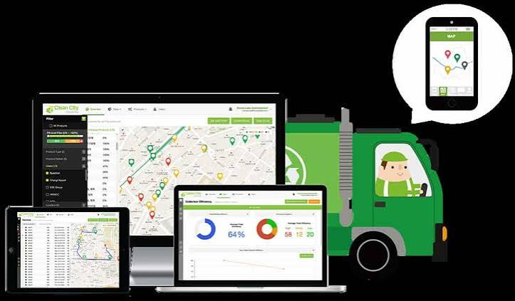
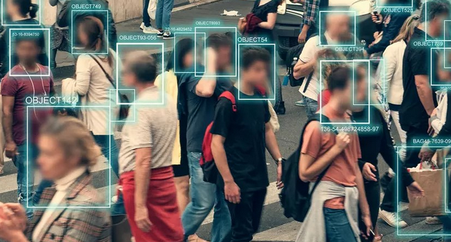
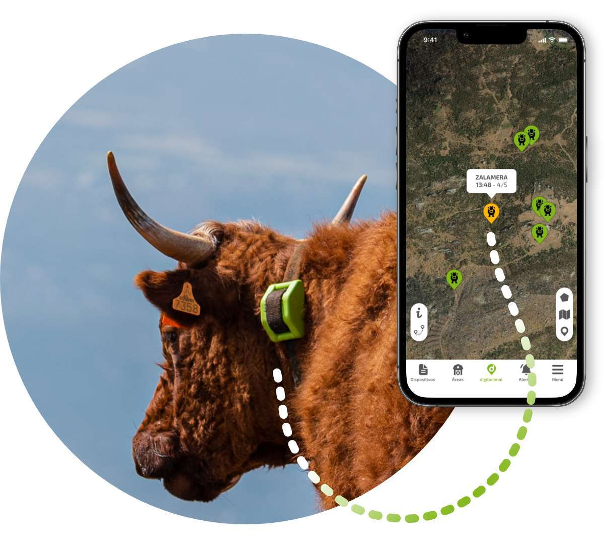

Transition éducative digitale
Transformer l'enseignement vers un modèle numérique innovant, soutenu par un accompagnement intelligent par IA.
Voir sur GitHubConception et développement de solutions numériques intelligentes, automatisation de processus, cybersécurité et systèmes IoT avancés.
Étudiant en Master 2 Intelligence Artificielle, Objets Connectés et Cybersécurité, avec des compétences en développement web, mobile et logiciel, en analyse de données et en sécurisation des systèmes.
Expérience dans la conception et la réalisation de solutions numériques et intelligentes ainsi que dans l'automatisation. Motivé et créatif prêt à contribuer à des projets innovants et à accompagner la transformation numérique.
École Nationale d’Informatique (ENI), Université de Fianarantsoa.
Faculté des Sciences, Université de Fianarantsoa.
LP2A Ambondromisotra.
LP2A Ambondromisotra.
ONG IDEA ACADEMY & ENI, Université de Fianarantsoa.
Association des étudiants AENS2A - Université de Fianarantsoa.
Développement d'un système IoT de pompe solaire pour l'accès à l'eau potable.
Formation spécialisée sur l'énergie photovoltaïque.
Certification en compétences bureautiques et outils de productivité.
Dépannage, installation et configuration avancée de systèmes (Linux, Windows).
Transformer l'enseignement vers un modèle numérique innovant, soutenu par un accompagnement intelligent par IA.
Voir sur GitHub
Optimisation de la collecte urbaine grâce à l'IoT et l'IA, pour réduire les coûts.
Voir sur GitHub
Évaluation des risques, gestion de vulnérabilités, sécurité réseau Wi-Fi, audit et rapports.
Voir sur GitHubCaméras Hikvision, backend FastAPI, base de données MongoDB, stockage cloud Cloudinary.
Voir sur GitHubInterfaces web, mobile et logiciel de bureau pour la gestion du pompage.
Voir sur GitHub

tianafanantenanal@gmail.com
+261 34 64 888 85
github.com/fanantenanal
Antananarivo, Madagascar